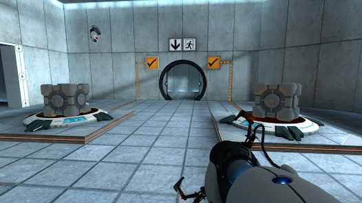
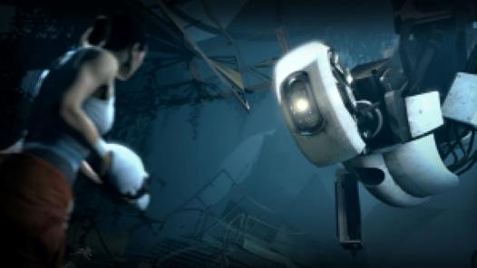
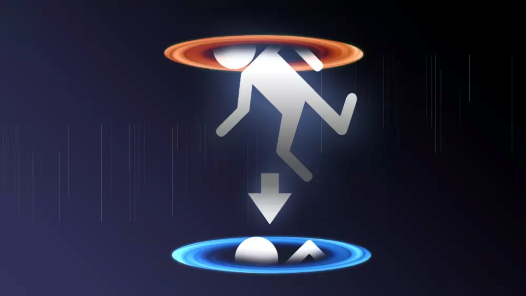

Portal 1 e os testes malucos @_@
Em um mundo onde a física é brincadeira de criança e bolos são uma mentira, Portal emerge como uma obra-prima de engenhosidade envolvente. Desenvolvido pela Valve Corporation (os cara da Steam lá) e lançado em 2007, este jogo desafia os jogadores com quebra-cabeças, levando-os a uma viagem além da realidade.

No centro desta saga está Chell, uma protagonista silenciosa e determinada, que acorda em uma instalação de testes misteriosa conhecida como Aperture Science. Sob a orientação da inteligência artificial GLaDOS, os jogadores são lançados em uma série de quebra-cabeças cada vez mais complexos, onde a manipulação do espaço e do tempo é a chave para o progresso.

O principal na jogabilidade de Portal é a arma de portais, uma ferramenta de manipulação dimensional que permite aos jogadores criar portais interconectados em superfícies adequadas. Esta mecânica abre um mundo de possibilidades, desafiando os jogadores a repensarem conceitos fundamentais como gravidade, momento e perspectiva.
